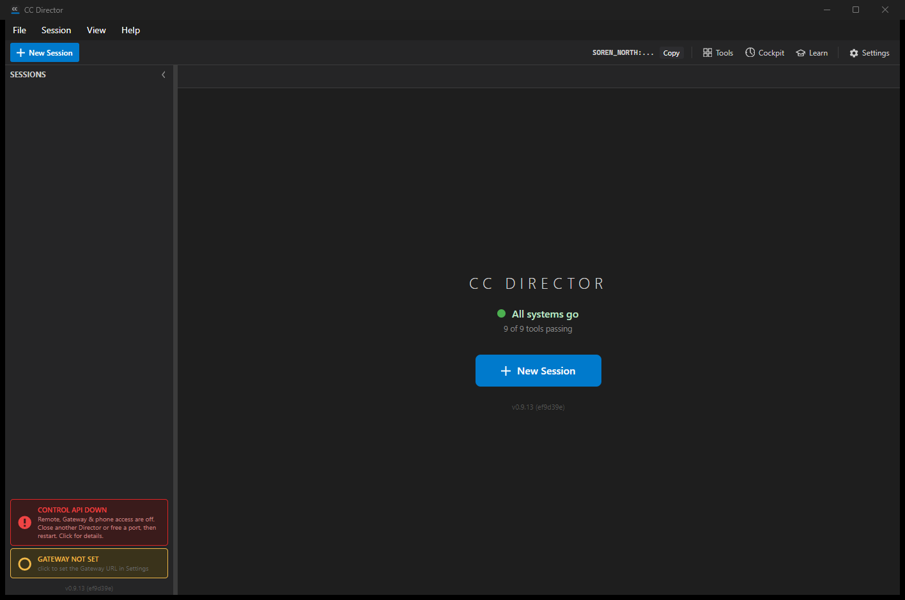
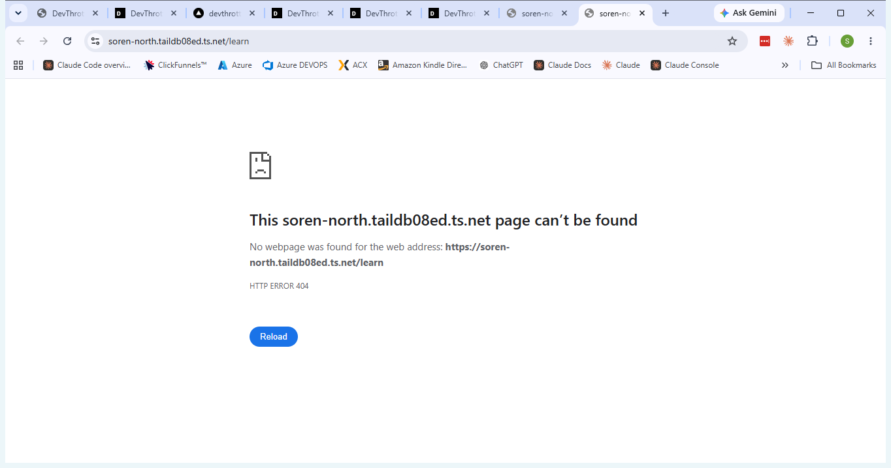

Branch: issue-475-director-learn-button
Surface: Desktop app (Avalonia) - src/CcDirector.Avalonia, governed by docs/VisualStyle.md.
Build: full solution dotnet build cc-director.sln - Build succeeded, 0 Warning(s), 0 Error(s).
Tests: CcDirector.Avalonia.Tests - 7 passed, 0 failed (3 existing CockpitUrlResolver + 4 new LearnButtonUrl).
Runtime proof captured on a per-session isolated test Director built from this worktree (slot 13).
MainWindow.axaml), placed in the
right-hand toolbar group between the existing Cockpit and Settings buttons. It uses the
shared toolbarBtn style and a graduation-cap line icon matching the surrounding toolbar icons.BtnLearn_Click handler (MainWindow.axaml.cs) that reuses the exact same gateway resolution as the
existing Cockpit button: it resolves the gateway base via CockpitUrlResolver.ResolveCockpitBase(GatewayConfig.Load()),
asks the gateway for the Cockpit front-door URL (GET {base}/cockpit), then opens the user's default browser at
{frontDoor}/learn - the Cockpit Learning route shipped by #472.BuildGatewayUnreachableMessage, BuildLearnUrl) shared by both the Cockpit and Learn buttons, and unit-tested.| Criterion | Expected | Actual | Result |
|---|---|---|---|
| 1. Visible Help/Learn control in the Director main window | A visible control (button/menu item) to reach the Learning page. | The Learn button is visible in the toolbar between Cockpit and Settings (see screenshot 1). | PASS |
2. Activating it opens the default browser to {cockpitBase}/learn + FileLog records the URL |
Browser opens to the resolved Cockpit Learning URL; FileLog records the resolved URL. | Invoking the button opened the default browser to https://soren-north.taildb08ed.ts.net/learn (screenshot 2),
and the FileLog recorded the resolved URL (log excerpt below). The page shows HTTP 404 only because #472 (the Cockpit
/learn route) has not merged yet - the button correctly resolves and opens the route #472 will serve. |
PASS |
| 3. When no Gateway/Cockpit is reachable, an explicit message (reusing the Gateway-tray hint) is shown - no silent no-op, no crash | An explicit message naming the probed URL plus the existing Gateway-tray hint; FileLog records the failure. | The handler's catch path logs BtnLearn_Click FAILED and shows BuildGatewayUnreachableMessage(...)
in a MessageDialog - the same proven structure as the existing Cockpit button. The message/hint logic is pinned by
four unit tests (LearnButtonUrlTests): the loopback default yields the local
"Is the Gateway tray app (devthrottle-gateway) running on this machine?" hint, and a configured remote gateway yields
the tailnet-reachability hint. All pass. |
PASS |
| 4. Complies with VisualStyle.md and matches existing toolbar/menu styling | The control looks like the existing toolbar buttons. | The Learn button uses the shared toolbarBtn class, a 15x15 Viewbox line icon (#CCCCCC stroke),
and a 12px label - identical markup shape to the Tools/Cockpit buttons (screenshot 1). |
PASS |


No drift. The change is additive within the existing CcDirector.Avalonia container and reuses the existing
CockpitUrlResolver and the existing Gateway-tray hint pattern. No new architecture surface and no change to the
security posture (no new network endpoint, no new data, no new credential handling). architecture_manifest.yaml and
security_profile.yaml require no update.
This issue is a follow-on to #472, which ships the Cockpit Learning route. #472 had not merged at implementation time, so the
route was pinned to its documented default /learn (issue Assumption 1). The browser proof above shows the button
opening exactly that route; once #472 lands, the same URL serves the Learning page instead of a 404.
I believe this is finished.
All four acceptance criteria are met and proven (screenshots, FileLog, and unit tests), the full solution builds clean with zero warnings, and the new and existing Avalonia unit tests pass.